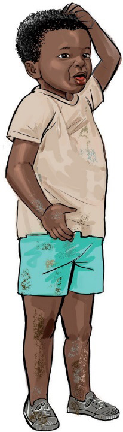

Mbalu alikuwa mvivu sana. Hakupenda usafi. Hakupenda kuoga wala kupiga mswaki. Hakupenda kufua nguo za nyumbani wala sare za shule. Alienda shuleni na nguo chafu. Nandera alimwambia Mbalu aache uchafu lakini hakusikia.
Mbalu alijikuna mara kwa mara. Wenzake walimwambia kuwa anajikuna kwa sababu ya uchafu. Walimwambia kuwa akiwa safi hatajikuna tena. Siku moja, Mbalu alipofika nyumbani, alifua nguo zake chafu.
Siku iliyofuata, Mbalu aliamka na kwenda kuoga. Alipiga mswaki vizuri. Alivaa nguo safi na kwenda shuleni. Alipendeza sana. Mbalu hakujikuna tena. Mbalu ameahidi kuwa safi kila siku.
Soma maneno yenye herufi mb, ng, nd, kw na mw kutoka katika hadithi uliyoisoma.
Taja maneno mengine yanayoundwa kwa herufi mb, ng, nd, kw na mw.
Hadithi hii inahusu nini?
Utafanya nini ili kudumisha usafi nyumbani na shuleni?
Umejifunza nini katika hadithi hiyo?